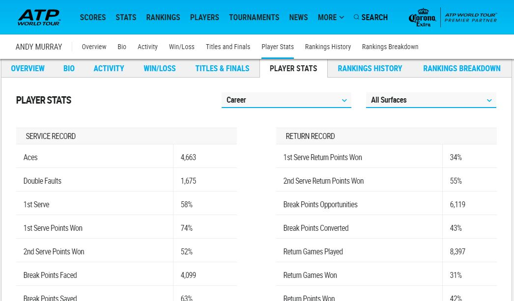

R can be used to retreive data from many sources and in many different formats. R also has the potential, via some fantastic packages, to scrape/harvest data from the web, which is how we will collect data for the various tennis players we will need to look at.
We’ll use a number of R packages to do this, including jsonlite which is used to parse JSON data, and rvest which can be used on websites to target and select html tags and return the data found on webpages.
The ATP site contains a lot of data, and it can be filtered for various summary stats that are to be used in some of the servevolleyR functions.
Individual players stats are found on their own page, we need to know these individual urls in order to get the relevant data. This data can be quickly retrieved using R (or other programming languages), for either a collection of players or individuals, the url http://www.atpworldtour.com/-/ajax/playersearch/PlayerUrlSearch? returns a JSON object with the players name and the partial url to their profile page.
If we wanted to search for all players called andy then we can do it using the code below, which converts the JSON into a nice dataframe for us. First we load the jsonlite package using libary(jsonlite), then use the fromJSON function to parse the json, before printing the first 6 rows of our new dataset with head()
library(jsonlite)
andy <- fromJSON("http://www.atpworldtour.com/-/ajax/playersearch/PlayerUrlSearch?SearchTerm=andy murray")
head(andy$items)## Key Value
## 1 Andy Murray /en/players/andy-murray/mc10/overview
## 2 Andy Sugg /en/players/andy-sugg/sf80/overview
## 3 Andy Schrecker /en/players/andy-schrecker/s590/overview
## 4 Andy Stewart /en/players/andy-stewart/s599/overview
## 5 Randy Rocchio /en/players/randy-rocchio/r710/overview
## 6 Andy Solis /en/players/andy-solis/s294/overviewIf you go to http://www.atpworldtour.com/en/players/andy-murray/mc10/overview, then it should take you to Andy Murray’s profile page, which includes some of the data shown below behind one of the tabs. This page contains the data we need for the various functions found in servevolleyR.
